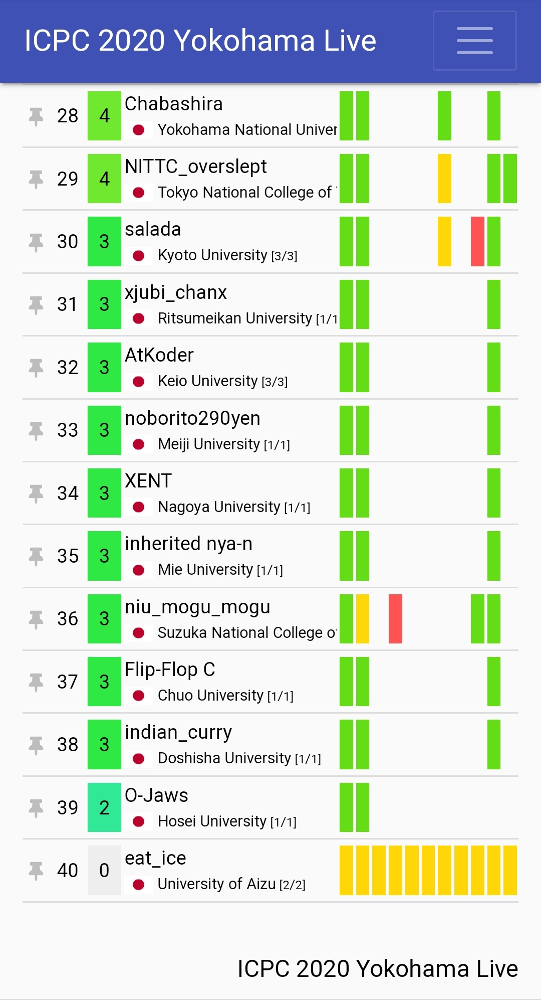

ICPC 2020 Asia Yokohama Regional
コロナ下の特殊ルール rule
___KING___ (maroonrkさん,yutaka1999さん,IH19980412さん) が3時間で全完して優勝
凍結後すぐの順位
eat_ice(beetさんのチーム)がサブマリンをして最終的にABCEGHIJの8完をした。
Yes/No(リンク)ではこれによって大盛り上がりになった。
以下はTwitterからに引用
ICPC での潜伏は、ソースコードにでも「潜伏してます」とでも書いておいてもらえるとスタッフと審判の心労が減りますので、真似する方はよろしくお願いします。
サブマリンするときは上記に従いましょう。ちなみに、ICPCではサブマリンするメリットはないそうです。